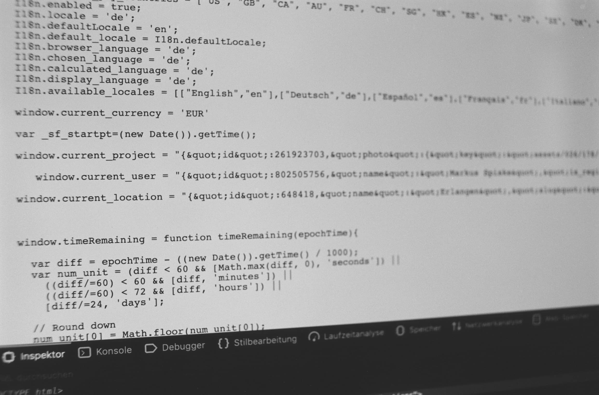

Project 1
Korte beschrijving van project 1.
Student Server- en Netwerkbeheer
Hier staan de verschillende projecten en labs die ik heb gemaakt doorheen mijn opleiding. Ze zijn onderverdeeld in interactieve kaarten met een afbeelding en een korte beschrijving. Wanneer je op een kaart klikt, ga je rechtstreeks naar het project.

Korte beschrijving van project 1.

Korte beschrijving van project 2.
Korte beschrijving van project 3.
Korte beschrijving van project 4.
Korte beschrijving van project 5.
Korte beschrijving van project 6.